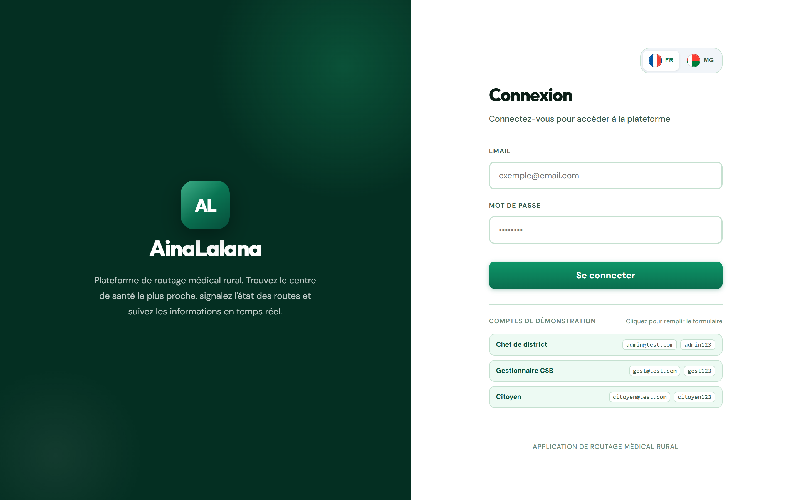
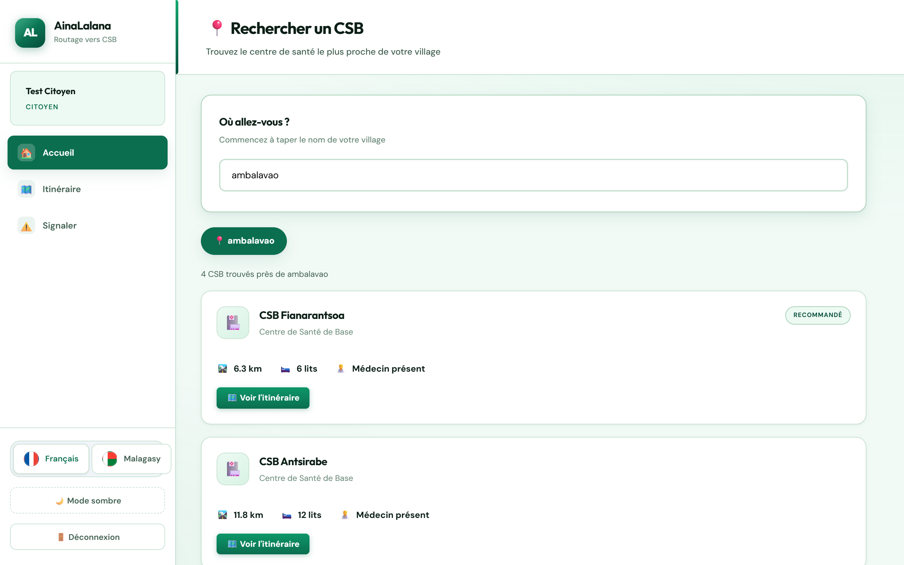
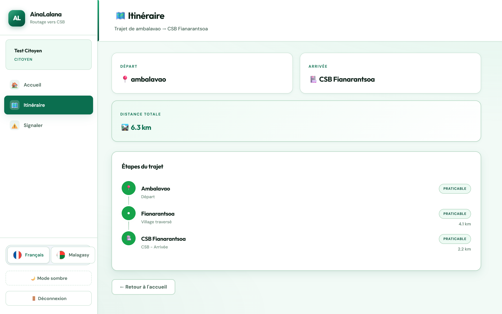
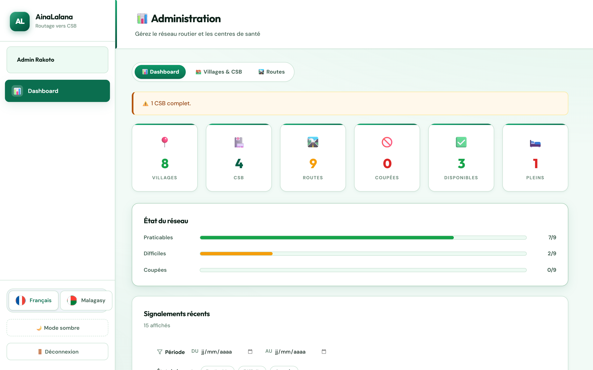
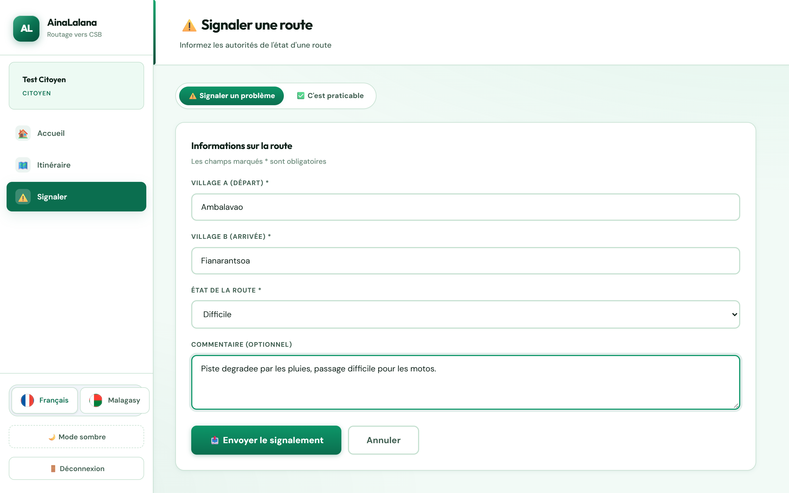

Citoyen
Recherche son village avec autocomplétion, compare les CSB par distance et accessibilité, obtient un itinéraire étape par étape et signale l'état d'une route.
Projet full-stack · 2026
Une plateforme qui aide les habitants des zones rurales de Madagascar à rejoindre le centre de santé le plus proche — en tenant compte de l'état réel des routes.

Dans les zones rurales malgaches, rejoindre un centre de santé suppose de choisir la bonne piste. Une route peut être inondée, coupée par un éboulement ou simplement dégradée — sans que personne ne le sache avant d'être sur place.
Les informations existent, mais elles sont dispersées : le citoyen connaît sa piste, le gestionnaire du centre connaît ses lits disponibles, le district connaît les travaux. Aucun outil ne reliait ces trois réalités.
Une application unique, avec trois espaces adaptés à chaque rôle, et un calcul d'itinéraire qui pénalise les routes signalées comme difficiles ou les exclut quand elles sont coupées.
L'état du réseau n'est pas une donnée figée : il évolue avec les signalements des citoyens et les mises à jour du district.
Recherche son village avec autocomplétion, compare les CSB par distance et accessibilité, obtient un itinéraire étape par étape et signale l'état d'une route.
Tient à jour les lits disponibles et la présence d'un médecin. Ces données alimentent directement les recommandations faites aux citoyens.
Supervise le réseau : tableau de bord, gestion des villages, CSB et routes, historique des signalements filtrable par période.




Le backend Flask sert à la fois le build React et l'API REST : un seul processus, donc un seul service à déployer et à surveiller.
La couche métier est séparée des contrôleurs et des DAO. Les structures
algorithmiques (graphe, tas binaire, Trie, KMP) sont isolées dans
backend/utils/ et testables indépendamment.
Le calcul d'itinéraire devait rester instantané même avec un réseau dense.
Le tas binaire a été implémenté à la main (insertion et extraction en
O(log n)) plutôt qu'avec heapq, pour garder la maîtrise de la
structure et pouvoir la mesurer.
×5,9 plus rapide que la version naïve sur 100 nœuds
L'autocomplétion devait tolérer les fautes de frappe et les accents. J'ai implémenté un Trie et l'algorithme KMP, puis mesuré les deux.
Plus lents sur petits volumes — et c'est assumé
| Algorithme | Naïf | Optimisé | Écart |
|---|---|---|---|
| Tas binaire (1 000 opérations) | 0,0769 s | 0,0294 s | ×2,61 |
| Dijkstra (100 nœuds) | 0,0159 s | 0,0027 s | ×5,91 |
| Trie (autocomplétion) | 0,0101 s | 0,2222 s | plus lent |
| KMP (recherche de motif) | 0,0000 s | 0,0028 s | plus lent |
Les deux dernières lignes sont le résultat le plus instructif du projet : sur de petits volumes, les fonctions natives de Python (écrites en C) sont imbattables. L'optimisation ne devient rentable qu'au-delà d'un certain volume de données — mesurer valait mieux que supposer.
Trois comptes de démonstration sont disponibles sur la page de connexion.
admin@test.com / admin123 ·
gest@test.com / gest123 ·
citoyen@test.com / citoyen123